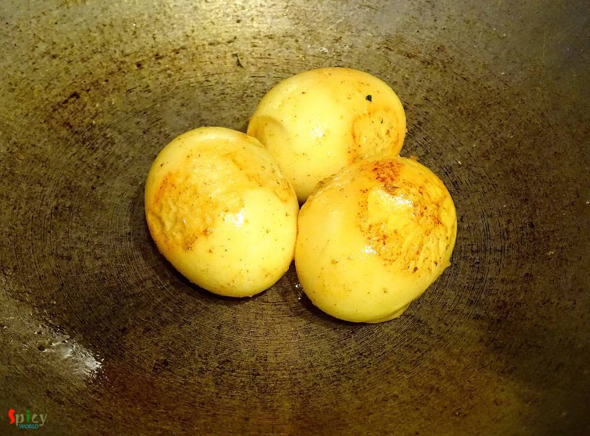

Simple and Easy Recipes
Sorshe Dim Posto / Egg curry with Mustard and Poppy seeds paste
© 2016 Spicy World, Published on: Jan 27, 2016
We both are not frequent egg eaters, but when we do, we try to make the curry yumm yumm !! One of our favourite egg curry is 'sorshe dim posto'- traditional bengali dish. 'Sorshe' means mustard seeds and 'posto' means poppy seeds. Lunch dishes always plays a big part in Bengali cuisine. There are several typically bengali dishes which you can only enjoy as lunch with steamed rice and may be after that, a long nap. This dish is one of those typical dishes but with a very simple and easy recipe. The fresh flavour of green chilies and poppy seeds always makes us happy. It is my pleasure to share this traditional egg recipe with you guys. Make this in your lunch and enjoy.

Ingredients
- 3 or 4 hard boiled eggs.
- 1 cup of finely chopped onion.
- 2 - 3 green chilies.
- 1/2 Teaspoon of nigella seeds / kalojeera.
- 3 Tablespoons of poppy seeds.
- 2 Teaspoons of black mustard seeds.
- 1 Teaspoon of yellow mustard seeds.
- 3 - 4 Tablespoons of milk.
- Salt and sugar.
- 1 Teaspoon of turmeric powder.
- 3 Tablespoons of mustard oil.

Steps
Soak the poppy seeds and two types of mustard seeds in 3 to 4 Tablespoons of milk for 2 to 3 hours.
Then make a smooth paste out of the seeds with little milk or water. Keep it aside.
Rub the boiled eggs with little salt and turmeric powder well.
Heat a Teaspoon of oil in a pan and fry the eggs for 1-2 minutes.
Then keep them aside.
Heat the rest of the oil.
Add nigella seeds and green chilies in hot oil. Saute for 30 seconds.
Add chopped onion in the hot oil. Fry it till become translucent.
Then add 4 Tablespoons of that paste, salt, pinch if sugar and turmeric powder. Mix well for 3-4 minutes.
Now add the fried eggs. Mix well for 2 minutes.
Then add little warm water and cook for 7-10 minutes in slow flame.

Check the seasoning and adjust it according to your taste.
Turn off the heat and let it rest for 2-3 minutes befor serving.
Now, if you like the raw flavour of mustard oil, you can drizzle half Teaspoon of oil after finishing the cooking.
I skipped it.
Your sorshe dim posto is ready ...
Enjoy this hot with some steamed rice.
")